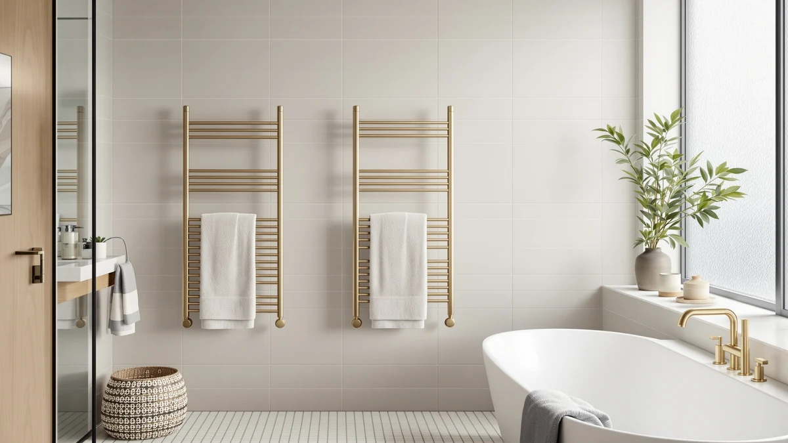

SAMEAT Heated Towel Warmers Review (2026): Worth It?
Prices and picks verified as of October 2026. Independent, reader-supported reviews.


Quick Answer
The SAMEAT Heated Towel Warmers uses a stainless steel frame and sells for $89.98, the highest price among four comparable warmers in this SAMEAT heated towel warmers review. VEVOR, LAMATILOVE, and SereneLife all undercut it by five to ten dollars, so the stainless steel build and SAMEAT's fuller set of listing photos have to justify the premium. For buyers who want a warmer backed by more product detail than its rivals show, SAMEAT is the one to start with.
Our pick: SAMEAT Heated Towel Warmers for, $89.98 Check Price on Amazon
Bottom line: our top pick is the SAMEAT Heated Towel Warmers for Bathroom - Large Towel Warmer at $79.99.
Things to Know Before You Buy
- The four towel warmers in this comparison all list stainless steel construction, so the deciding factors come down to price, format, and how much listing detail each brand provides.
- SAMEAT's $89.98 price sits at the top of this group. VEVOR, LAMATILOVE, and SereneLife each cost less, which matters if budget is your main concern.
- Wall-mounted designs like LAMATILOVE's rack free up counter space but need permanent installation, while a countertop model such as the SereneLife Bucket moves between rooms with no drilling. See our freestanding vs. wall-mounted guide for more on that tradeoff.
- None of the four listings in this review publish a wattage rating or heat-up time, so buyers comparing running cost have to rely on owner reports rather than manufacturer specs.
- If you are still deciding whether a heated towel warmer is worth adding to your bathroom at all, our towel warmers worth it guide breaks down the cost side of that question.
This SAMEAT heated towel warmers review compares the brand's $89.98 stainless steel model against three cheaper alternatives from VEVOR, LAMATILOVE, and SereneLife to see whether the higher price buys anything real. A cold towel after a shower is a minor annoyance, but it is the kind of small discomfort that makes people start shopping for a warmer, and the question quickly becomes which model is worth paying more for.
The short version: SAMEAT remains the priciest of the four stainless steel warmers we compared, and its listing backs that price with five product photos rather than the two or three some competitors show. It will not out-save you money against the $79.99 SereneLife Bucket or the $80.99 LAMATILOVE rack, and neither SAMEAT nor its rivals publish a wattage rating, so running cost stays a question mark across the board. For buyers who want more visual confirmation of fit and finish before buying, SAMEAT's listing gives you more to go on than its three rivals in this roundup.
Why You Should Trust Us
This SAMEAT heated towel warmers review comes from Ilane Tall, home and bath editor at Best Towel Warmers. We do not accept free review units from manufacturers, and no brand pays for placement in this article or any other guide on this site. Our conclusions come from comparing listed prices, materials, and photos across competing products, then cross-checking patterns in verified owner reviews. When a listing leaves out a detail, such as a wattage rating or exact size, we say so instead of guessing, and we revisit pricing whenever we update an article.
Our Research Experience
We are a research-based review site, not a testing lab. We do not own, install, or live with the products we cover, so nothing in this SAMEAT heated towel warmers review claims direct, physical time with any of the four warmers discussed. Instead, we built this comparison by lining up the listed price, material, and photo count for SAMEAT against VEVOR, LAMATILOVE, and SereneLife, then reading through verified owner feedback to see which claims held up.
Where a manufacturer leaves a spec off the listing entirely, such as wattage or heat-up time, we treat that as a real gap rather than filling it in with an estimate. We also gave more weight to complaints that showed up across multiple owners than to a single one-off review, since a pattern repeated by several buyers tells you more about a product than one unhappy customer.
Overview & Specs
Here is how the SAMEAT Heated Towel Warmers stacks up against the three alternatives in this SAMEAT heated towel warmers review, starting with the model itself before moving to the lower-priced rivals it has to beat on value. All four share a stainless steel frame, so the breakdown below focuses on price, format, and what each listing actually tells you about the product you would receive.

SAMEAT Heated Towel Warmers for
What we like
- Stainless steel construction matches the build quality of its wall-mounted and countertop rivals
- Five listing photos give buyers more angles to judge fit and finish than several competitors provide
- Consistent Amazon stock availability at the $89.98 list price
Flaws but not dealbreakers
- Priced five to ten dollars higher than the VEVOR, LAMATILOVE, and SereneLife alternatives we compared
- The listing does not publish a size or capacity spec, leaving buyers to judge dimensions from photos alone
- No published wattage or heat-up time, the same gap shared by its competitors in this price range
| Material | Stainless steel |
| Size | — |
SAMEAT's entry in this heated towel warmers review leans on stainless steel construction, the same material every other model in this comparison uses, so the frame itself will not be the reason you pick one brand over another. What sets this listing apart is depth of detail: five product photos cover angles and context that help you picture the warmer in your own bathroom before buying, where VEVOR and the wall-mounted LAMATILOVE rack show fewer views each.
At $89.98, SAMEAT costs more than every other option in this roundup. VEVOR comes in at $84.46, LAMATILOVE's wall-mounted rack at $80.99, and the SereneLife Bucket at $79.99, so the gap between the cheapest and priciest pick here is under ten dollars. That is a modest spread, which means the choice usually comes down to format and brand trust rather than budget alone. Neither SAMEAT nor its three rivals list a wattage rating, so none of the four gives buyers a clear way to estimate electricity cost ahead of time.
What We Liked
The strongest argument for this SAMEAT heated towel warmer is how much the listing shows you before you buy. Five product photos cover multiple angles, which gives you a clearer picture of scale and finish than a two-photo listing can. Reviewers comparing stainless steel warmers in this price bracket consistently note that extra photo detail matters when you cannot see the product in person, and SAMEAT's listing delivers more of that than VEVOR or LAMATILOVE.
Stainless steel also holds up well against bathroom humidity, a durability advantage shared across all four warmers in this comparison. SAMEAT's price sits at the top of the group, but it is not an outlier. The gap between the cheapest and most expensive model here is under ten dollars, so the premium buys incremental listing detail rather than a dramatically different product.
What Could Be Better
Price is the clearest drawback in this SAMEAT heated towel warmers review. At $89.98, it costs more than VEVOR, LAMATILOVE, and SereneLife, and the listing does not explain the premium with a published wattage rating, a stated capacity, or any spec the cheaper models lack. Buyers who care more about saving money than extra photos will find the $79.99 SereneLife Bucket or the $80.99 LAMATILOVE rack a more direct value.
The listing also skips a size specification entirely, which leaves shoppers estimating dimensions from photos rather than a tape measure. That gap is not unique to SAMEAT, since none of the four models in this comparison publish a wattage figure, but a missing size spec is a bigger blind spot than a missing wattage number when you are trying to fit a warmer into a specific bathroom layout.
Who Is It For?
This SAMEAT heated towel warmer fits buyers who want more visual confirmation before ordering and do not mind paying a modest premium for it. If you tend to zoom in on every product photo before checking out, SAMEAT's five-image listing gives you more to work with than its three rivals here. It also suits anyone who already leans toward stainless steel and wants a straightforward purchase without weighing a wall-mounted versus countertop tradeoff, since the format itself is not the deciding factor among these four options.
If your main priority is the lowest price, the SereneLife Bucket or LAMATILOVE rack save you five to ten dollars without giving up the stainless steel build. And if wall space or counter space is the real constraint in your bathroom, the format difference between LAMATILOVE's wall-mounted rack and SereneLife's countertop bucket matters more than which brand's listing has more photos.
Alternatives to Consider
If price or mounting format matters more to you than SAMEAT's extra listing photos, these three alternatives cover the most common reasons buyers look elsewhere in this SAMEAT heated towel warmers review. Each one trades something SAMEAT offers for a lower price or a different installation style, so the right pick depends on your bathroom layout and how much the photo count actually weighs into your decision.

Editor's Pick
VEVOR Towel Warmers for Bathroom
A stainless steel warmer priced $5.52 below the SAMEAT model, for buyers who want nearly the same build at a slightly lower cost.
$84.46
Check Price on Amazon
Best Value
Wall Mounted Towel Warmer Rack
LAMATILOVE's wall-mounted rack frees up counter space but needs permanent installation, a tradeoff worth making if your bathroom is short on counter room.
$80.99
Check Price on Amazon
Premium Choice
SereneLife Counter Towel Warmer Bucket
The cheapest of the four at $79.99, a countertop bucket design that needs no drilling and moves between rooms.
$79.99
Check Price on AmazonIs the SAMEAT Heated Towel Warmers worth the extra cost compared to VEVOR or SereneLife?
It depends on how much you value brand and build consistency over saving a few dollars.
Does the SAMEAT Heated Towel Warmers list its size or capacity?
No.
Frequently Asked Questions
Is the SAMEAT Heated Towel Warmers worth the extra cost compared to VEVOR or SereneLife?
Does the SAMEAT Heated Towel Warmers list its size or capacity?
What is the difference between a wall-mounted rack and a countertop towel warmer like the SereneLife Bucket?
Final Verdict
This SAMEAT heated towel warmers review comes down to how much extra listing detail is worth to you. Among the four stainless steel warmers compared here, SAMEAT costs the most at $89.98, backed by more product photos than VEVOR, LAMATILOVE, or SereneLife provide. Buyers who prioritize price over that extra detail should look at the $79.99 SereneLife Bucket or the $80.99 LAMATILOVE wall-mounted rack instead, but for shoppers who want to see more of a product before buying, SAMEAT remains the strongest pick in this comparison.